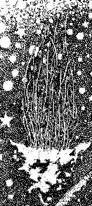

|
 
The wolves carry thier name in thier midnight speeches, and that quiet, subtle Voice is summoning me from afar. And a voice much closer will shout into my ear with unholy impatience. The weight of my soul will decide its final resting place. Before the time, I must put down here all that I can concerning the horrors that stalk Without, and which lie in wait at the door of every man, for this is the ancient arcana that has been handed down of old, but which has been forgotten by all but a few men, the worshippers of the Ancient Ones (may thier names be blotted out!) And if I do not finish this task, take what is here and discover the rest, for time is short and mankind does not know or understand the evil that awaits it, from every side, from every open Gate, from every broken barrier, from every mindless acolyte at the alters of madness. For this is the Book of the Dead, the Book of the Black Earth, that I have writ down at the peril of my life, exactly as I recieved it, on the planes of IGIGI, the cruel celestial spirits from beyond the Wanderers of the Wastes. Let all who read this book be warned thereby that the habitation of men are seen and surveyed by that Ancient Race of gods and demons from a time before time, and that they seek revenge for that forgotten battle that took place somewhere in the Cosmos and rent the Worlds in the days before the creation of Man, when the Elder Gods walked the Spaces, the race of MARDUK, as he is known to the Chaldeans, and of ENKI our master, the Lord of Magicians. Know, then, that I have trod all the Zones of the Gods, and also the places of Azonei, and have descended into the foul places of Death and Eternal Thirst, which may be reached through the Gate of GANZIR, which was built in UR in the days before Babylonian was. Know, too, that I have spoken with all manner of spirit and daemon, whose names are no longer known in the societies of Man, or were never known. And the seals of these are writ herein ; yet others I must take with me when I leave you. ANU have mercy on my soul! I have seen the Unknown Lands, that no map has ever charted. I have lived in the deserts and the wastelands, and spoken with demons and the souls of slaughtered men, and of women who have died in childbirth, victims of the she-fiend LAMMASHTA. I have traveled beneath the Seas, in search of the Palace of Our Master, and found the stone monuments of vanquished civilizations, and de- ciphered the writings of some of these; while still others remain mysteries to any man who lives. And these civilizations were destroyed because of the knoeledge contained in this book. I have traveled among the stars, and trembled before the gods. I have at last found the formula by which I passed the gate of ARZIR, and passed into the forbidden realms ofthe foul IGIGI.
I have raised demons, and the dead. I have summoned the ghosts of my ancestors to real and visible appearence on the tops of temples built to reach the stars, and built to touch the nethermost cavities of HADES. I have wrestled with the Black Magician, AZAG-THOTH, in vain, and fled to the Earth by calling upon INANNA and her brother MARDUK, Lord of the double-headed AXE. I have raised armiesagainst the Lands of the East, by summoning the hordes of fiends I have made subject unto me, and so doing found NGAA, the god of the heathens, who breathes flame and roares like a thousand thunders. I have found fear. I have found the Gate that leads to the Outside, by which the Ancient Ones, who ever seek the entrance to our world, keep eternal watch. I have smelled the vapors of that Ancient One, Queen of the Outside, whose name is writ in the MAGAN text, the testiment of some dead civilization whose priests, seeking power, swing open the dread, evil Gate for an hour past the time and were consumed. I came to possess this knowledge through circumstances quite peculiar, while still the unlettered son of a shepherd in what is called Mesopotamia by the Greeks. When I was only a youth, traveling alone in the mountains to the East, called MASSHU by the people who live there, I came upon a grey rock carved with three strange symbols. It stood as high as a man, and as wide around as a bull. It was firmly in the ground, and I could not move it. Thinking no more of the carvings, save that they might be the work of a king to mark some Ancient victory over an enemy, I built a fire at its foot to protect me from the from the wolves that wander in that reigons and went to sleep, for it was night and I was far from my village, being Bet Durrabia. Bieng about three hours from dawn, in the nineteenth of Shabatu, I was awakened by the howl of a dog, or perhaps a wolf, uncommonly loud and close at hand. The fire had died to its embers, and these red, glowing coals cast a faint, dancing shadow across the stone monument with the three carvings. I began to make haste to build another fire when, at once, the grey rock began to rise slowly into the air, as if it were a dove. I could not move or speak for the fear that siezed upon my spine and wrapped cold fingers around my skull. The Dik of Azug-bel-ya was no stranger seemed to melt into my hands! Presently, I heard a voice, softly, some distance away and a more practical fear, that the possibility of robbers, took hold of me and I rolled behind weeds, trembling. Another voice joined the first, and soon several men in black robes of thieves came together over the place where I was, surroundin the floating rock, of which they did not exhibit in the least fright. I could see clearly now that the three carvings on the stone monument were glowing, a flame red color, as through the rock were on fire. The figures were murmuring together in prayer or invocation, of which only a few words could be heard, and these in some unknown tongue; though, ANU have mercy on my soul!, these rituals are not unknown to me any longer. The figures, whose faces I could not see or recognize, began to make wild passes in the air with knives that glinted cold and sharp in the mountain night. From beneath the floating rock, out of the very ground where it had sat, came rising the tail of a serpent. This serpent was surely larger than any I had ever seen. The thinnest section thereof was fully that of the arms of two men, and as it rose from the earth it was followed by another, although the end of the first was not seen as it seemed to reach down into the very Pit itself. These were followed by still more, and the ground began to tremble under the pressure of so many of these enormous arms. The chanting of the priests, for I knew them now to be some the servents ofsome hidden Power, became much louder and nearly hysterical. IA! IA! ZI AZAG! The ground where I was hiding became wet with some substance, being slightly downhill from the scene I was witnessing. I touched the wetness and found it to be blood. In horror I screamed and gave my presence away to the priests. They turned toward me, and I saw with loathing that they had cut their chests with the daggers they had used to raise the stone, for some mystical purpose I could not then divine; although I now know that blood is the very food of these spirits, which is why tha field after the battles of war glows with an unnatural light, the manifestation of the spirits feeding thereon. May ANU protect us all! My scream had the effect of casting thier ritual into chaos and disorder. I raced through the mountain path by which I had come, and the priests came running after me, although some seemed to stay behind, perhaps to finish the Rites. However, as I ran wildly down the slopes in the cold night, my heart gave rise in my chest and my head growing hot, the sound of splitting rocks and thunder came from behind me and shook the very ground I ran on. In fright and haste I fell to the earth. Rising, I turned to face whatever attackerhad come nearest me, though I was unarmed. To my surprise, what I saw was no priest of ancient horror, no necromancer of that forbidden Art, but black robes fallen upon the grass and weeds, with no seeming presance of life or bodies beneath them. I walked cautiously to the first and, picking up a long twig, lifted the robe from the tangle of weeds and thorns. All that remained of the priest was a pool of slime, like green oil, and the smell of a body lain long in the sun to rot. Such a stench nearly overpowered me, but I was resolute to find the others, to see if the same fortune had also befallen them. Walking back up the slope that I had so fearfully run down only moments ago, I came across yet another of the black priests, in identical condition to the first. I kept walking, passing more of the robes as I went, not venturing to overturn them any longer. Then, I finally came upon the grey stone monument that had risen unnaturally into the air at the command of the priests. It was now upon the ground once more, but the carvings still glowed with supernatural light. The serpents, or what I had then thought of as serpents, had disappeared. But in the dead embers of the fire, now cold and black, was a shining metal plate. I picked it up and saw that it was also carved, as the stone, but very intricatly, after a fasion I could not understand. It did not bear the same markings as the stone, but I had the feeling I coukd almost read the characters, but could not, as though I once knew the tongue but had since long forgotten. Mt head began to ache as though a devil was pounding my skull, when a shaft of moonlight hit the metal amulet, for I know now what it was, and a voice entered my head and told me the secrets of the scene I had witnessed in one word: KUTULU. In that moment, as though whispered fiercly into my ear, I understood. These were the signs carved upon the grey stone, that was the gate to the Outside:
The amulet that I held in my hand, and hold to this very day, around my neck as I write these words, is this:
Of the three symbols carved, the first is the Sign of our Race from beyond the Stars, and is called ARRA in the tongue of the Scribe who taught it to me, an emissary of the Elder Ones. In the tongue of the eldest city of Babylon, it was UR. It is the Sigil of the Covenant of the Elder Gods, and when they see it, they who gave it to us, they will not forget us. They have sworn! Spirit of the Skies, Remember! The second sign is the Elder Sign, and is the Key whereby the Powers of the Elder Gods may be summoned, when used with the proper words and shapes. It has a Name, and is called AGGA. The third sign is the Sigil of the Watcher. It is called BANDAR. The Watcher is a Race sent by the Elder Ones. It keeps vigil while one sleeps provided the appropriate rituals and sacrifice has been preformed; else, if called, it will turn upon you. These seals, to be effective, must be graven on stoneand set in the ground. Or, set upon the alter of offerings. Or, carried to the Rock of Invocations. Or, engraved upon the metal of ones God or Goddes and hung about the neck, but hidden from the view of the profane. Of these three, the ARRA and the AGGA may be used seperatly, that is to say singly, and alone. The BANDAR however, must never be used alone, but with one or both of the others, for the Watcher must needs to be reminded of the Covenant he has sworn with the Elder Gods and our Race, else it will turn upon thee and slay thee and ravage thy town untill succour is to be had from the Elder Gods by the tears of thy people and the wailing of thy women. KAKAMMU! The fire amulet that I retrieved from the ashes of the fire, and which caught the light of the moon, is a potent seal against whatever may come in the Gate from the Outside for, seeing it, they willretreat from thee SAVE ONLY IF IT CATCH THE LIGHT OF THE MOON UPON ITS SURFACE for, in the dark days of the moon, or in clouds, there can be little protection against the fiends from the Ancient Land should they break the barrier, or be let in by thier servants upon the face of the Earth. In such a case, no recourse is to be had untill the light of the moon shines upon the Earth, for the moon is the Eldest among the Zonei, and is the starry symbol of our pact. NANNA, Father of the Gods, Remember! Wherefore, the amulet must be engraved upon pure silver in the full light of the moon, that the moon shine upon it at its working, and the essence of the moon be drawn down and captured therein. And the proper incantations must be performed, and the prescribed rituals as given forth in this Book. And the amulet must NEVER be exposed to the light of the Sun, for SHAMMASH called UDU, in his jealousy, will rob the seal of its power. In such case, it must be bathed in waters of camphor, and the incantations and ritual performed once again. But verily, it were better to engrave another. These secrets I give to thee at the pain of my life, never to be revealed to the profane, or the banished, or the Worshippers of the Ancient Serpent, but to keep within thine own heart, always silent upon these things. Peace be to thee! Henceforth, from that fateful night in the mountains of MASSHU, I wandered about the countryside in search of the key to the secret knowledge that had been given me. And it was a painful and lonley journey, during which time I took no wife, called no house or village my home, and dwelt in variuos countries, often in caves or in the deserts, lerning several tongues as a traveler, to bargin with the tradespeople and learn of the news and customs. But my bargining was with the Powers that reside in each of these countries. And soon, I came to understand many things of which before I had no knowledge, except perhaps in dreams. The friends of my youth deserted me, and I them. When I was seven years gone from my family, I learned that they had all died of thier own hand, for reasons no one was able to tell me; thier flocks had later been slain as the victoms of some strange epidemic. I wandered as a begger, being fed from town to town as the local people saw fit, often being stoned instead of threatened with imprisonment. On occasion, I was able to convince some learned man that I was a sincere scholar, and was thereby permitted to read the Ancient Records in which the details of necromancy, sorcery, magick and alchemy are given. I learned of the spells that cause men illness, the plague, blindness, insanity and even death. I learned the various classes of demons and evil gods that exist, and of the old legends concerning the Ancient Ones. I was thus able to arm myself against the dread Maskim, who lie in wait about the boundaries of the world, ready to trap the unwary and devour the sacrifices set out at night and in deserted places; against the she-devil LAMMASHTA, who is called Sword that Splits the Skull, the sight of whom causes horror and dismay, and (some say) death of a most uncommon nature. In time I learned of the names and properties of all the demons, devils, fiends and monsters listed herein, in this Book of the Black Earth. I learned of the powers in the astral Gods, and how to summon thier aid in times of need. I learned, too, of the frightful beings who dwell beyond the astral spirits, who guard the entrance to the Temple of the Lost, of the Ancient Days the Ancient of the Ancient Ones, whose Name I connot write here. In my solitary ceremonies in the hills, worshipping with fire and sword, with water and dagger, and with the assistance of strange grass that grows wild in certain parts of the MASSHU, and with which I had unwittingly built my fire before the rock, that grass that gives the mind great power to travel termendous distances into the heavens, as also into the hells, I recieved the formulae for the amulets and talismans which follow, which provide the Priest with safe passage among the spheres wherein he may travel in search of the Wisdom. But now, after One Thousand-and-One moons of the journey, the Maskim nip at my heels, the Rabishu pull at my hair, Lammashta opens her dread jaws, AZAG-THOTH gloats blindly at his throne, KUTULU raises his head and stares up through the Veils of sunkun Varloorni, up through the Abyss, and fixes his stare upon me; wherefore I must with haste write this Book lest my end come sooner than I had prepared. For indeed, it appears as though I have failed in some regard as to the order of the rites, or to the formulae, or to the sacrifices, for now it appears as if the entire host of ERESSKIGAL lies waiting, dreaming, drooling for my departure. I pray the gods that I am saved (which he is not, for "gods" cannot save ones soul, only GOD) and not perish as did the Priest, ABDUL BEN-MARTU, in Jerusalem (the gods remember and have mercy upon him!). My fate is no longer writ in the stars, for I have broken the Chaldean Covenant by seeking power over the Zonei. I have set foot on the moon, and the moon no longer has power over me. The lines of my life have been obliterated by my wanderings in the Waste, over the letters writ in the heavens by the gods. And even now I can hear the wolves howling in the mountains as they did that fateful night, and they are calling my name, and the names of the Others. I fear for my flesh, but I fear for my spirit more. Remember, always, in every empty moment, to call upon the gods not to forget thee, for they are forgetful and very far away. Light thy fires high in the hills, and on the tops of temples and pyramids, that they may see and remember. Remember, always, to copy each of the formulae as I have put it down and not to change it by one line or dot, not so much as hair's breadth, lest it be rendered valueless, or worse: a broken line provides means of entrance for those Outside, for a broken star is the Gate of GANZIR, the Gate of Death, the Gate of the Shodows and the Shells. Recite the incantations as they are written here, in the manner thus prescribed. Prepare the rituals without erring, and in the proper places and times render the sacrifices. May the gods ever be merciful unto thee! May thou escape the jaws of the MASKIM, and vanquish the power to the Ancient Ones! AND THE GODS GRANT THEE DEATH BEFORE THE ANCIENT ONES RULE THE EARTH ONCE MORE! KAKAMMU! SELAH! |
 e Testimony of Abdul-Al Hazred
e Testimony of Abdul-Al Hazred
 his is the
testimony of all that I have seen, and all that I have learned, in those
years that I have possesed the Three Seals of MASSHU. I have seen One
Thousand and-One moons, and surely this is enough for the span of a mans
life, though it is said the Prophets lived much longer. I am weak, and
ill, and bear great tired- ness and exaustion, and a sigh hangs in my
breast like a dark lantern, I am old.
his is the
testimony of all that I have seen, and all that I have learned, in those
years that I have possesed the Three Seals of MASSHU. I have seen One
Thousand and-One moons, and surely this is enough for the span of a mans
life, though it is said the Prophets lived much longer. I am weak, and
ill, and bear great tired- ness and exaustion, and a sigh hangs in my
breast like a dark lantern, I am old.
 Book of ye Dead Names Book of ye Dead Names
|
Ye
diary of a madman  |